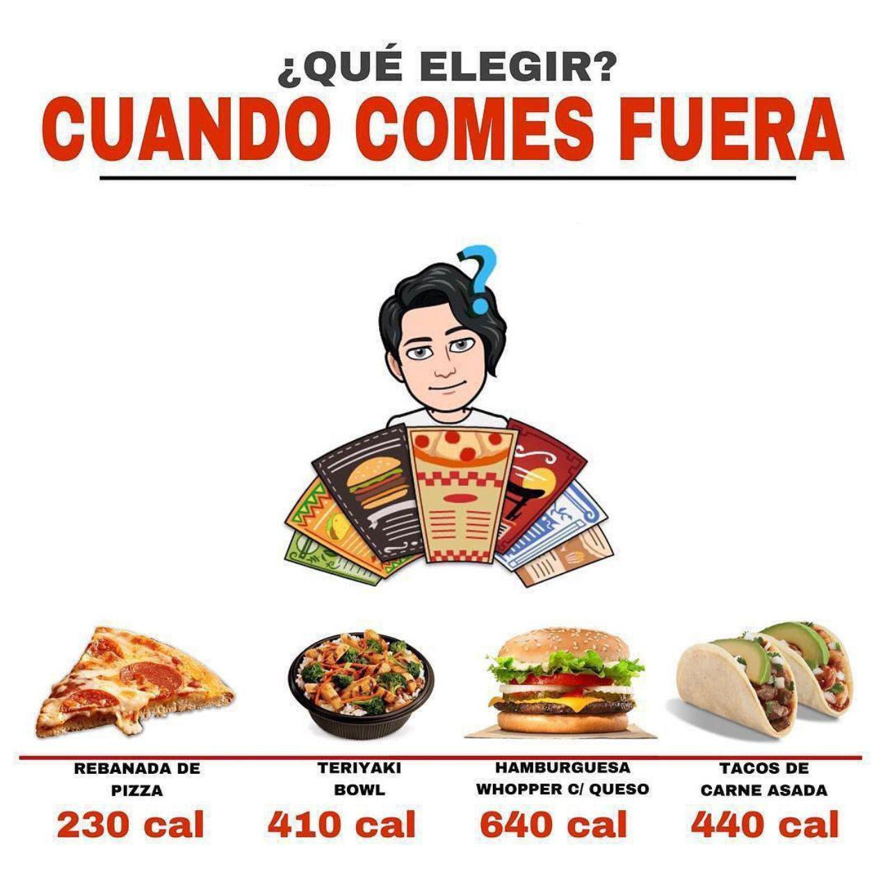

¿Nunca te ha pasado que por alguna razón te encuentras fuera de casa y no sabes qué comer?
Aquí una breve comparación entre diferentes platillos que nos podemos encontrar en restaurantes.

Como podemos observar la hamburguesa (de burger king) contiene más del doble de calorías que una rebanada de pizza (de Little Caesars), mientras que un bowl de teriyaki contiene cantidades similares a 2 tacos de carne asada con aguacate.
Pero al elegir una comida no solo debemos tomar en cuenta calorías, sino también los macro nutrientes que los conforman.
Desde mi punto de vista seleccionar comidas ricas en proteínas puede ser lo ideal.
MACRO NUTRIENTES
Rebanada de pizza:
> Proteínas: 11 g
> Carbohidratos: 25 g
> Grasas: 9 g
Bowl de teriyaki:
> Proteínas: 20 g
> Carbohidratos: 72 g
> Grasas: 5 g
Hamburguesa:
> Proteínas: 27 g
> Carbohidratos: 51 g
> Grasas: 37 g
Tacos de carne asada (sin aceite):
> Proteínas: 36 g
> Carbohidratos: 24 g
> Grasas: 26 g
Así que si un día no sabes qué comer toma en cuenta tanto calorías como macro nutrientes y no tengas miedo de darte un gusto de vez en cuando.
información extraída de: Aplicación “MyFitnessPal”, página oficial de Little Caesars y Burger King.
Para los tacos de carne asada se tomaron en cuenta 2 tortillas de maíz, 120 g de carne asada y 75 gr de aguacate.